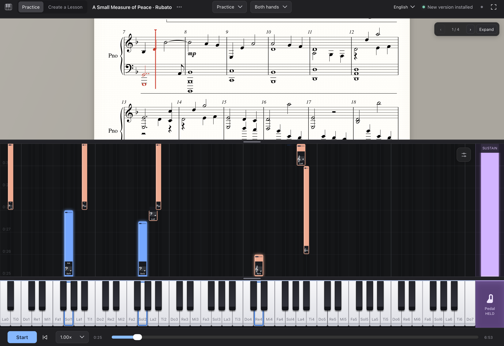
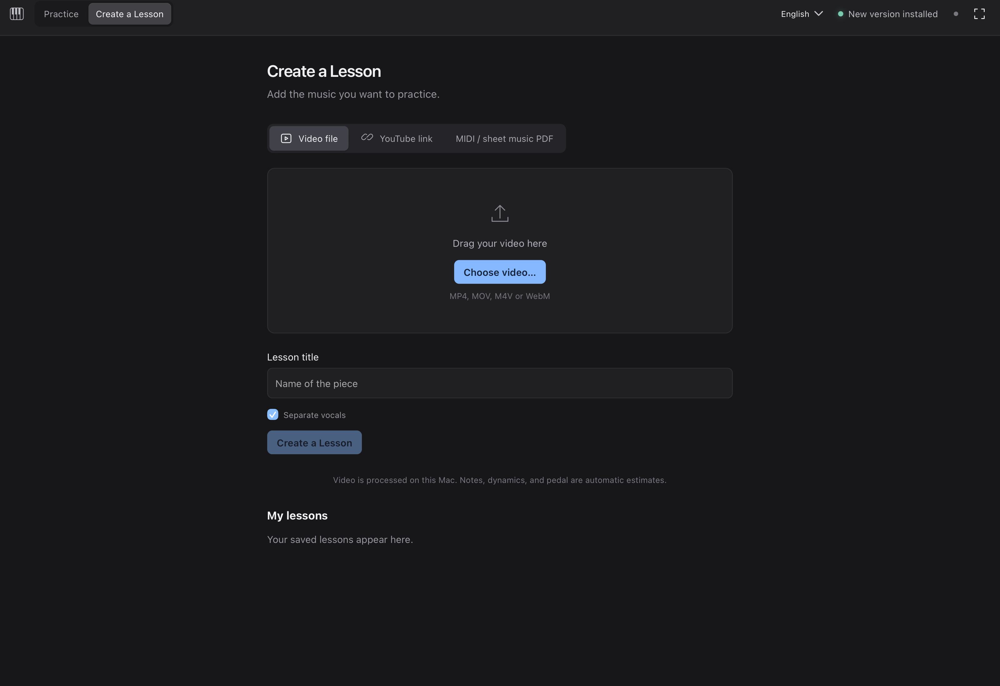
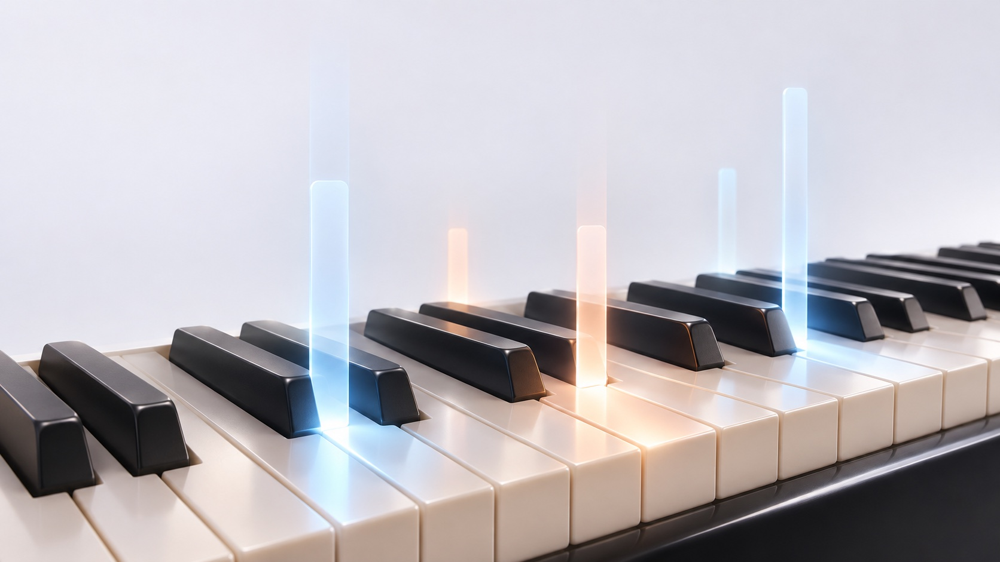

See what’s next.
Read the score or follow the falling notes toward the keyboard. The two views move together, so you can find your way without losing your place.
PIANO SPARK FOR MAC
Follow the notes. Play the right keys.
Piano Spark waits until you’re ready to move on.
__PLATFORM_LINE__

PRACTICE THAT LISTENS
A recording keeps going. Your practice shouldn’t have to. Piano Spark follows the keys you play on your connected piano, giving each note the attention it deserves.
Read the score or follow the falling notes toward the keyboard. The two views move together, so you can find your way without losing your place.
Play the highlighted notes together. The lesson waits until the required notes are held and extra keys are released, so a tricky chord gets as much time as you need.
Keep the notes held for their indicated duration, then release them and move on. Practice becomes a conversation between your hands and the music.
No rushing past the hard part. The music moves when you do.
A CLEARER WAY INTO THE MUSIC
A familiar score above. A visual guide below.
Choose the cues that help your hands understand.
Blue and coral distinguish the parts in lessons that include them. Focus on a hand or part, then bring the music together.
Slow the lesson down, listen before you play, and repeat it as often as you like. Your practice pace is yours to choose.
Your lesson, position, settings, and workspace stay with you. Go full-screen or resize the panels to suit your practice. Come back without setting everything up again.
CREATE A LESSON
Start with a MIDI file, a score, a video, or a YouTube link.
Turn it into something you can work through at the piano.

Your lessons, all together. Import once, keep the lesson in your library, and return whenever you’re ready to play.
Bring in the notes, timing, and pedal information already in your MIDI file.
Import a PDF score and let the built-in recognition turn the page into a lesson.
Choose a local video and create a piano lesson from its audio, on your Mac.
Paste a link to bring a performance into your practice workflow.
Audio transcription and PDF recognition are experimental. Generated lessons can contain note or rhythm errors. Local-file processing runs on your Mac; YouTube requires an internet connection.
MORE TIME WITH THE MUSIC
No new account. No complicated setup.
Just a little space for your next practice.

YOUR MAC. YOUR PIANO.
Piano Spark is a standalone desktop app. Practice right away. Download lesson tools only when you need them, with clear progress inside the app. Updates arrive automatically.
__MAC_TEXT__
Bluetooth MIDI reads the keys and pedal you play. Pianos with standard Bluetooth MIDI appear in the app’s device list; Bluetooth audio alone is not enough.
Updates preserve your saved lessons and workspace. Downloaded tools stay on your Mac, separate from app updates. No repeated model downloads.
PIANO SPARK
Your next note is a good place to start.
__RELEASE_LABEL__